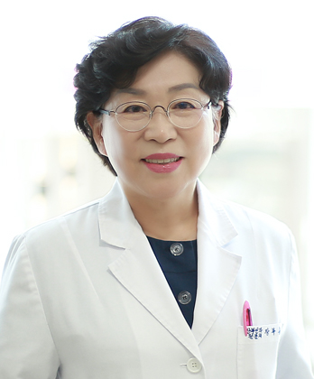
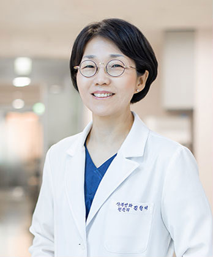
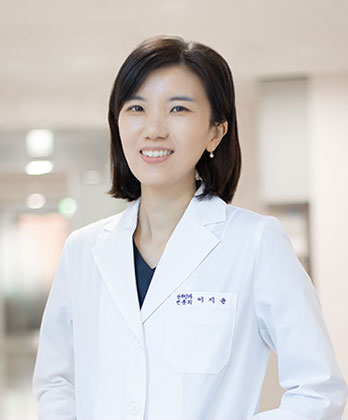
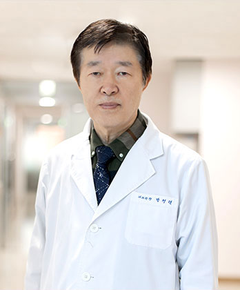
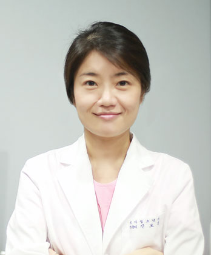
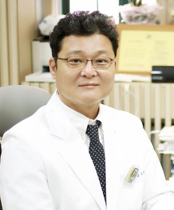

의료진 소개
은혜산부인과의 의료진을 소개합니다.
의료진의 자세한 약력을 살펴 보실 수 있습니다.
- 장부용 원장
- 김향미 원장
- 이지윤 원장
- 박행렬 원장
-

-
장부용 원장
- 현 은혜산부인과 대표원장
- 연세대학교 의과대학 산부인과학교실 외래교수
- 전남대학교 의과대학 졸업
- 자랑스러운 숙명인 상 수상 (60회)
- 서사모아국 국립병원 산부인과장
- 2000년 국내 최초 수중분만 / 국내 최다 수중분만
- 2004년 국내 최고 자연분만율 병원 선정 (심사평가원발표)
- 국내 최저 제왕절개율 병원 선정 (심사평가원발표)
- 2005년 서울기독대학교 치유상담 대학원 졸업
- 2008년 서울기독대학교 신학 전문 대학원졸업
다수 TV 출연
- - CBS 새롭게 하소서 2회
- - CTS 매일 주와 함께
- - KBS 다큐 3일 (개인편) (병원편)
- - CGN TV 하늘빛 향기
- - CGN TV 인생을 바꾼 한 말씀
- - CGN TV 엄마와 아기가 함께 드리는 예배
- - MTN 핫이슈 매거진
- - 리빙TV 지구촌 요리방
-

-
김향미 원장
- 은혜산부인과 부원장
- 이화여자대학교 의과대학 (의학사)
- 이화여자대학교 대학원 (의학박사)
- 노인병인정전문의 (대한노인병학회)
- 서울대학교병원 전임의 (체외수정 및 생식내분비학)
- 이화여자대학교 의과대학 조교수
- Singapore 국립대학교 불임크리닉 연수
- 가천의과대학교 조교수 및 인천 길병원 인공수태연구소 부소장
- 한림대학교 의과대학 부교수대우 및 평촌 성심병원 불임센터 부실장
- 대한산부인과학회 법제위원회 학술간사
- 미래와희망산부인과 원장
-

-
이지윤 원장
- 서울대학교 응용생물화학부 졸업
- 부산대학교 의학전문대학원 졸업
- 고려대학교 의료원 안암병원 산부인과 수료
- 고려대학교 의료원 안암병원 외래교수
- 신촌 연세퀸 산부인과 근무
- 한국모자보건학회 우수 논문상 수상
-

-
박행렬 원장
- 서울대학교 의과대학 졸업 (의학사)
- 중앙대학교 외과대학원 졸업 (의학박사)
- 아세아연합 신학대학원 졸업 (의료선교학석사)
- 프리덤신학교 졸업 (선교학박사)
- 한세대학교 목회전문대학원 졸업 (신학박사)
- 생폴대학교 수료 (임상목회실습)
- 총신대학교 신학대학원 졸업 (목회학석사)
- 전주 예수병원 내과 과장
- 서사모아 의료선교사
- 아세아연합 신학대학원 의료선교학과 교수
- 서울기독대학교 상담대학원 교수
- 내과전문의
- 척추교정(카이로프락틱) 시술 (1995년부터)
연계 의원 의료진 소개
-

-
은혜 소아청소년과
진보경 원장
- 소아청소년과 전문의
- 서울대학교병원 인턴수료
- 서울대학교 병원 소아청소년과 레지던트 수료
- 대한 소아과학회 평생회원
- 대한 소아알레르기 호흡기학 정회원
- 대한 소아심장학 정회원
- 대한 신생아학 정회원
-

-
은혜 내과
김기덕 원장
- 중앙대학교 의과대학 졸업
- 서울아산병원 인턴 수료
- 서울아산병원 내과전문의 수료
- 서울아산병원 소화기내과 분과 전임의 수료
- 서울아산병원 소화기내과 임상강사
- 서울아산병원 내과 외래교수
- 제주대병원 소화기내과 교수
- 대한 소화기내시경학회 정회원
- 대한 소화기학회 정회원
- 대한 내과학회 정회원
- 대한 고혈압학회 정회원
- 대한 초음파학회 정회원
- 대한 당뇨학회 정회원
- 대한 노인병학회 정회원
- 대한 심장학회 정회원
- 대한 내분비학회 정회원